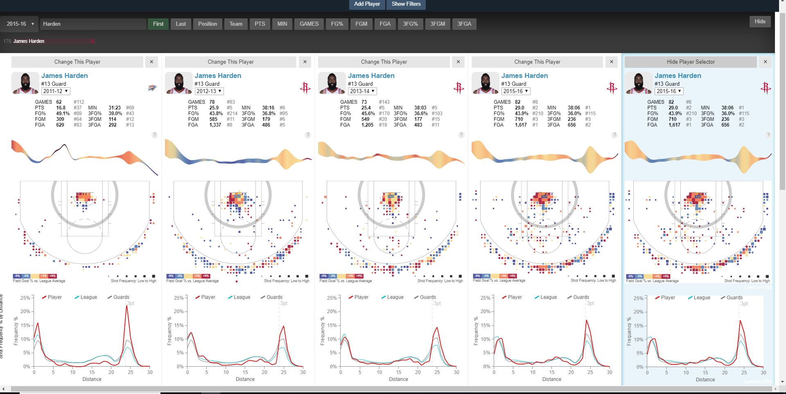

Ever since I was younger, basketball has been my favorite sport. To this day I have enjoyed playing it and more importantly watching. So I knew that i had to choose a basketball visualization. I found the most perfect one too. Buckets
Buckets is an in depth basketball analytics site that allows user to view different basketball analytics for an individual player between the years 2011-2016. Unfortunately, it does not cover current years. But overall site has a ton of amazing features for basketball analytics. A users allowed to view different stats like shot efficiency on the field and different averages.
The creator of the site is name Peter Beshai and he made the site for one of his graduate level courses. He pulled his data off the stats Nba site. The last time he updated the site was in April of 2016, so at the time the data was as relevant as it could have possibly done. He definitely did work deserving of an A espcially with the attention to details he added. I do have many questions for him though like how he stored all the data especially since it is so quick to load. I also question how he did some of the shot chartings.
This visualization like i said contains a lot of features like comparing other players shot charts and their stats to each other. You are able to view up to 10 players at a time. From you can also view how the league compares in shot selection at the different positions. Even more incredible the visualization allows you to view each teams shot selection. So all 30 teams have a heat chart showing their strengths and weaknesses on the court. This is critical for many team matchups because it allows a team to force another into a weaker shooting position on the field for them. When it comes to the individual level for each playe you're able to view where their hotspots are on the court as well stats in terms of which side they favor more of the court. Also, everything in the visualiztion is relatively interactable. When you hover over a point you get more details about that point. A user can also change the color patterns used.

The comparison feature is probably the coolest feature because it creates the option to view player progression. While all great, I wish Peter kept up with the times an updated the site with more relevant data and even if he had more data that dated back to the Michael Jordan Era or even later into thte 80's if the stats existed would be a cool extension feature to add.